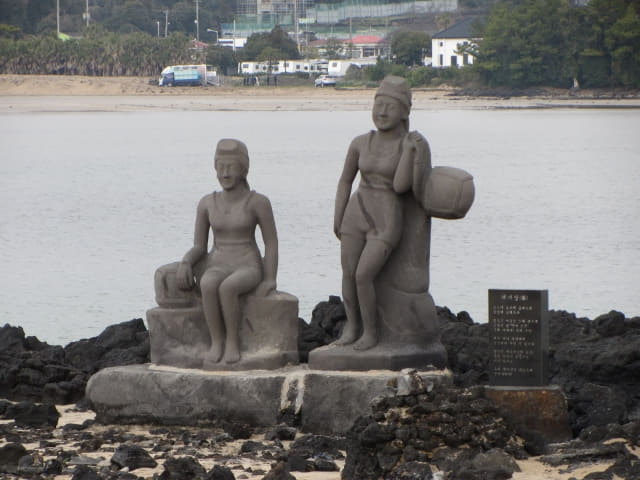

寄放了行李在雷森觀光酒店後, 沿馬路走約二十分鐘便來到表善海灘海邊, 這裡已經是偶來3號小路其中一段。接著我們會從這裡走到偶來3號小路的終點站, 也是偶來4號小路的起點站。

接著沿偶來3號小路走, 這一段是海濱步道, 十分寫意悠閒。
彎彎半圓的表善海灘, 景色十分優美。
我們下榻的雷森觀光酒店, 像鶴立雞群般佇立在表善海灘旁。我們的房間也看到這裡的。
濟州島沿岸都佈滿黑漆漆, 像燒焦的岩石, 奇形怪狀, 這些都是二百萬年前漢拏山爆發流出的溶岩所冷卻而成的。
石灘上的海女像 (해녀상)。

海女像對出的路旁草坪上有十二生肖石像, 做型頗得意的。
馬和濟州島的傳統木筏 Tewoo 。
哈哈~~ 我的生肖專欺負老虎的!
走過十二生肖石像, 來到海濱步道的盡頭, 這裡有一個古色古香的觀海涼亭。
偶來3號小路終點站
離開海濱, 在涼亭轉右往上走一會, 迎面是一條橫向的馬路。望望馬路對面, 擺放了偶來小路最可愛得意的標誌 – 甘穂, 那裡便是偶來3號小路的終點站, 也是偶來4號小路的起點站。